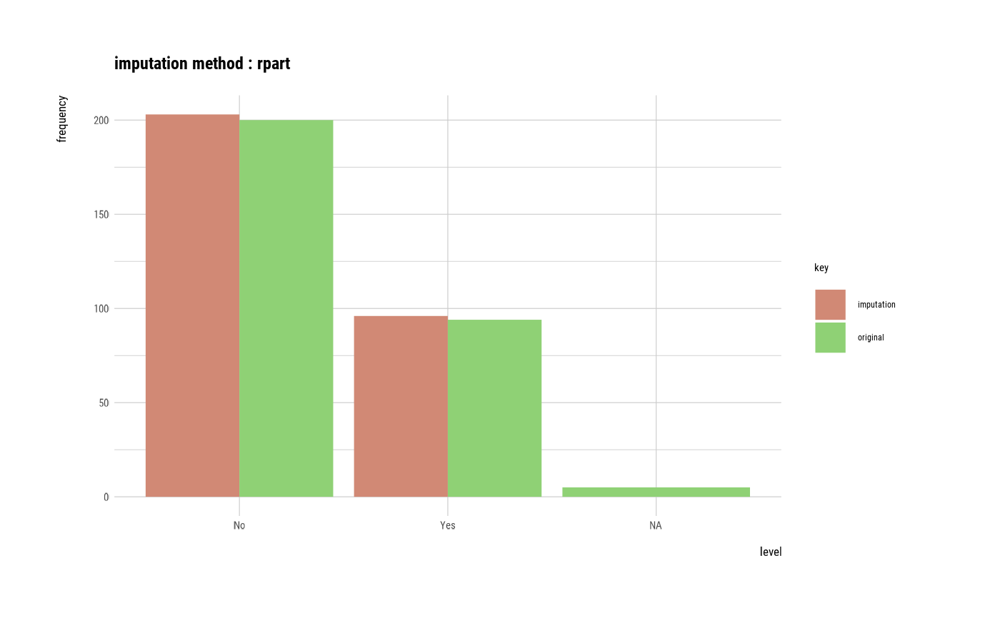

Visualize two kinds of plot by attribute of `imputation` class. The imputation of a numerical variable is a density plot, and the imputation of a categorical variable is a bar plot.
# S3 method for imputation plot(x, typographic = TRUE, base_family = NULL, ...)
Arguments
| x | an object of class "imputation", usually, a result of a call to imputate_na() or imputate_outlier(). |
|---|---|
| typographic | logical. Whether to apply focuses on typographic elements to ggplot2 visualization. The default is TRUE. if TRUE provides a base theme that focuses on typographic elements using hrbrthemes package. |
| base_family | character. The name of the base font family to use for the visualization. If not specified, the font defined in dlookr is applied. (See details) |
| ... | arguments to be passed to methods, such as graphical parameters (see par). only applies when the model argument is TRUE, and is used for ... of the plot.lm() function. |
Details
The base_family is selected from "Roboto Condensed", "Liberation Sans Narrow", "NanumSquare", "Noto Sans Korean". If you want to use a different font, use it after loading the Google font with import_google_font().
See also
Examples
# \donttest{ # Generate data for the example heartfailure2 <- heartfailure heartfailure2[sample(seq(NROW(heartfailure2)), 20), "platelets"] <- NA heartfailure2[sample(seq(NROW(heartfailure2)), 5), "smoking"] <- NA # Impute missing values ----------------------------- # If the variable of interest is a numerical variables platelets <- imputate_na(heartfailure2, platelets, death_event, method = "rpart") platelets#> [1] 265000.0 263358.0 162000.0 210000.0 327000.0 204000.0 127000.0 219143.0 #> [9] 263358.0 388000.0 368000.0 253000.0 136000.0 276000.0 427000.0 47000.0 #> [17] 262000.0 166000.0 237000.0 87000.0 276000.0 297000.0 289000.0 368000.0 #> [25] 263358.0 149000.0 196000.0 284000.0 153000.0 200000.0 263358.0 360000.0 #> [33] 319000.0 302000.0 188000.0 228000.0 226000.0 321000.0 305000.0 182479.7 #> [41] 263358.0 281234.6 185000.0 281234.6 194000.0 310000.0 271000.0 451000.0 #> [49] 140000.0 395000.0 166000.0 418000.0 263358.0 351000.0 255000.0 461000.0 #> [57] 223000.0 216000.0 319000.0 254000.0 390000.0 216000.0 254000.0 245794.8 #> [65] 263358.0 200176.5 213000.0 286108.3 244000.0 497000.0 374000.0 122000.0 #> [73] 243000.0 149000.0 225628.6 204000.0 317000.0 237000.0 283000.0 324000.0 #> [81] 293000.0 263358.0 196000.0 172000.0 302000.0 406000.0 173000.0 304000.0 #> [89] 235000.0 181000.0 249000.0 297000.0 245794.8 210000.0 327000.0 219000.0 #> [97] 254000.0 255000.0 318000.0 221000.0 298000.0 263358.0 149000.0 226000.0 #> [105] 286000.0 286108.3 263000.0 226000.0 304000.0 850000.0 306000.0 228000.0 #> [113] 252000.0 351000.0 328000.0 164000.0 271000.0 507000.0 281234.6 304935.8 #> [121] 210000.0 162000.0 228000.0 127000.0 217000.0 237000.0 271000.0 300000.0 #> [129] 267000.0 227000.0 249000.0 182479.7 263358.0 295000.0 231000.0 263358.0 #> [137] 172000.0 305000.0 221000.0 211000.0 225628.6 348000.0 329000.0 229000.0 #> [145] 338000.0 266000.0 218000.0 242000.0 225000.0 228000.0 235000.0 244000.0 #> [153] 184000.0 263358.0 235000.0 194000.0 277000.0 262000.0 235000.0 362000.0 #> [161] 242000.0 174000.0 448000.0 75000.0 334000.0 192000.0 220000.0 70000.0 #> [169] 270000.0 305000.0 263358.0 325000.0 176000.0 189000.0 281000.0 337000.0 #> [177] 105000.0 132000.0 267000.0 279000.0 303000.0 221000.0 265000.0 224000.0 #> [185] 219000.0 389000.0 153000.0 365000.0 201000.0 275000.0 350000.0 309000.0 #> [193] 260000.0 160000.0 126000.0 223000.0 263358.0 259000.0 279000.0 263358.0 #> [201] 73000.0 377000.0 220000.0 212000.0 277000.0 281234.6 226000.0 186000.0 #> [209] 283000.0 268000.0 389000.0 147000.0 481000.0 244000.0 290000.0 203000.0 #> [217] 358000.0 151000.0 271000.0 371000.0 263358.0 194000.0 329454.5 130000.0 #> [225] 504000.0 265000.0 189000.0 141000.0 237000.0 274000.0 62000.0 185000.0 #> [233] 255000.0 330000.0 305000.0 286108.3 248000.0 173000.0 257000.0 263358.0 #> [241] 329454.5 249000.0 255000.0 220000.0 264000.0 282000.0 314000.0 246000.0 #> [249] 301000.0 223000.0 404000.0 231000.0 274000.0 236000.0 263358.0 334000.0 #> [257] 294000.0 253000.0 233000.0 308000.0 203000.0 283000.0 198000.0 208000.0 #> [265] 147000.0 362000.0 263358.0 133000.0 350979.7 222000.0 263358.0 221000.0 #> [273] 215000.0 189000.0 150000.0 422000.0 327000.0 25100.0 232000.0 451000.0 #> [281] 241000.0 51000.0 215000.0 263358.0 279000.0 336000.0 279000.0 350979.7 #> [289] 263358.0 390000.0 222000.0 133000.0 382000.0 179000.0 155000.0 270000.0 #> [297] 742000.0 140000.0 395000.0 #> attr(,"var_type") #> [1] "numerical" #> attr(,"method") #> [1] "rpart" #> attr(,"na_pos") #> [1] 8 40 42 44 64 66 68 75 93 106 119 120 132 141 206 223 236 241 269 #> [20] 288 #> attr(,"type") #> [1] "missing values" #> attr(,"message") #> [1] "complete imputation" #> attr(,"success") #> [1] TRUE #> attr(,"class") #> [1] "imputation" "numeric"summary(platelets)#> * Impute missing values based on Recursive Partitioning and Regression Trees #> - method : rpart #> #> * Information of Imputation (before vs after) #> Original Imputation #> n 2.790000e+02 2.990000e+02 #> na 2.000000e+01 0.000000e+00 #> mean 2.586773e+05 2.593551e+05 #> sd 9.347939e+04 9.125783e+04 #> se_mean 5.596464e+03 5.277576e+03 #> IQR 9.000000e+04 8.800000e+04 #> skewness 1.519445e+00 1.505988e+00 #> kurtosis 7.676465e+00 7.921410e+00 #> p00 2.510000e+04 2.510000e+04 #> p01 5.958000e+04 6.178000e+04 #> p05 1.318000e+05 1.329000e+05 #> p10 1.526000e+05 1.546000e+05 #> p20 1.940000e+05 1.960000e+05 #> p25 2.105000e+05 2.125000e+05 #> p30 2.204000e+05 2.210000e+05 #> p40 2.350000e+05 2.362000e+05 #> p50 2.550000e+05 2.590000e+05 #> p60 2.633580e+05 2.650000e+05 #> p70 2.826000e+05 2.830000e+05 #> p75 3.005000e+05 3.005000e+05 #> p80 3.116000e+05 3.116000e+05 #> p90 3.656000e+05 3.620000e+05 #> p95 4.042000e+05 3.959000e+05 #> p99 5.046600e+05 5.040600e+05 #> p100 8.500000e+05 8.500000e+05plot(platelets)# If the variable of interest is a categorical variables # smoking <- imputate_na(heartfailure2, smoking, death_event, method = "mice") # smoking # summary(smoking) # plot(smoking) # Impute outliers ---------------------------------- # If the variable of interest is a numerical variable platelets <- imputate_outlier(heartfailure2, platelets, method = "capping") platelets#> [1] 265000 263358 162000 210000 327000 204000 127000 NA 263358 388000 #> [11] 368000 253000 136000 276000 427000 131800 262000 166000 237000 87000 #> [21] 276000 297000 289000 368000 263358 149000 196000 284000 153000 200000 #> [31] 263358 360000 319000 302000 188000 228000 226000 321000 305000 NA #> [41] 263358 NA 185000 NA 194000 310000 271000 404200 140000 395000 #> [51] 166000 418000 263358 351000 255000 404200 223000 216000 319000 254000 #> [61] 390000 216000 254000 NA 263358 NA 213000 NA 244000 404200 #> [71] 374000 122000 243000 149000 NA 204000 317000 237000 283000 324000 #> [81] 293000 263358 196000 172000 302000 406000 173000 304000 235000 181000 #> [91] 249000 297000 NA 210000 327000 219000 254000 255000 318000 221000 #> [101] 298000 263358 149000 226000 286000 NA 263000 226000 304000 404200 #> [111] 306000 228000 252000 351000 328000 164000 271000 404200 NA NA #> [121] 210000 162000 228000 127000 217000 237000 271000 300000 267000 227000 #> [131] 249000 NA 263358 295000 231000 263358 172000 305000 221000 211000 #> [141] NA 348000 329000 229000 338000 266000 218000 242000 225000 228000 #> [151] 235000 244000 184000 263358 235000 194000 277000 262000 235000 362000 #> [161] 242000 174000 404200 131800 334000 192000 220000 131800 270000 305000 #> [171] 263358 325000 176000 189000 281000 337000 105000 132000 267000 279000 #> [181] 303000 221000 265000 224000 219000 389000 153000 365000 201000 275000 #> [191] 350000 309000 260000 160000 126000 223000 263358 259000 279000 263358 #> [201] 131800 377000 220000 212000 277000 NA 226000 186000 283000 268000 #> [211] 389000 147000 404200 244000 290000 203000 358000 151000 271000 371000 #> [221] 263358 194000 NA 130000 404200 265000 189000 141000 237000 274000 #> [231] 131800 185000 255000 330000 305000 NA 248000 173000 257000 263358 #> [241] NA 249000 255000 220000 264000 282000 314000 246000 301000 223000 #> [251] 404000 231000 274000 236000 263358 334000 294000 253000 233000 308000 #> [261] 203000 283000 198000 208000 147000 362000 263358 133000 NA 222000 #> [271] 263358 221000 215000 189000 150000 422000 327000 131800 232000 404200 #> [281] 241000 131800 215000 263358 279000 336000 279000 NA 263358 390000 #> [291] 222000 133000 382000 179000 155000 270000 404200 140000 395000 #> attr(,"method") #> [1] "capping" #> attr(,"var_type") #> [1] "numerical" #> attr(,"outlier_pos") #> [1] 16 48 56 70 110 118 163 164 168 201 213 225 231 278 280 282 297 #> attr(,"outliers") #> [1] 47000 451000 461000 497000 850000 507000 448000 75000 70000 73000 #> [11] 481000 504000 62000 25100 451000 51000 742000 #> attr(,"type") #> [1] "outliers" #> attr(,"message") #> [1] "complete imputation" #> attr(,"success") #> [1] TRUE #> attr(,"class") #> [1] "imputation" "numeric"summary(platelets)#> Impute outliers with capping #> #> * Information of Imputation (before vs after) #> Original Imputation #> n 2.790000e+02 2.790000e+02 #> na 2.000000e+01 2.000000e+01 #> mean 2.586773e+05 2.557006e+05 #> sd 9.347939e+04 7.355749e+04 #> se_mean 5.596464e+03 4.403772e+03 #> IQR 9.000000e+04 9.000000e+04 #> skewness 1.519445e+00 2.464795e-01 #> kurtosis 7.676465e+00 -3.381412e-01 #> p00 2.510000e+04 8.700000e+04 #> p01 5.958000e+04 1.251200e+05 #> p05 1.318000e+05 1.319800e+05 #> p10 1.526000e+05 1.526000e+05 #> p20 1.940000e+05 1.940000e+05 #> p25 2.105000e+05 2.105000e+05 #> p30 2.204000e+05 2.204000e+05 #> p40 2.350000e+05 2.350000e+05 #> p50 2.550000e+05 2.550000e+05 #> p60 2.633580e+05 2.633580e+05 #> p70 2.826000e+05 2.826000e+05 #> p75 3.005000e+05 3.005000e+05 #> p80 3.116000e+05 3.116000e+05 #> p90 3.656000e+05 3.656000e+05 #> p95 4.042000e+05 4.040200e+05 #> p99 5.046600e+05 4.086400e+05 #> p100 8.500000e+05 4.270000e+05plot(platelets)# }